Week 07 · Outputs
Regenerative Leg Device, MVP Version
A small scale fully working version of the final project, with steps, calories, and live voltage on an OLED.
Overview
For this week's project I wanted to take on the scariest part of my final project head on, so I built a fully working small scale version of the wearable charging device powered by walking. On top of that I added 3 new features, step count, calories burned, and the live voltage being generated, all displayed on a small OLED screen. I also researched ways to solve the issues I had with my earlier prototype from Week 5, the main one being that the power flowed in 2 different polarities depending on which way the motor was spinning.
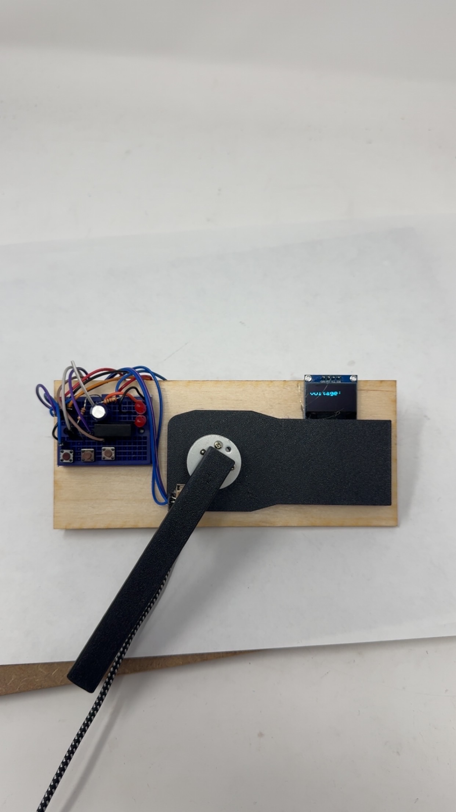
Build steps
I started by digging into how mechanical to electrical conversion actually works with small motors. The main thing I figured out was why my Week 5 prototype only flashed 2 LEDs at a time instead of lighting them all together. A DC motor's output flips polarity when the shaft reverses direction, so if I spin the rod back and forth (the way a knee bends when you walk), the motor outputs positive voltage half the time and negative voltage the other half. Without something to fix that, only the LED pointing the right way for each half cycle lights up.
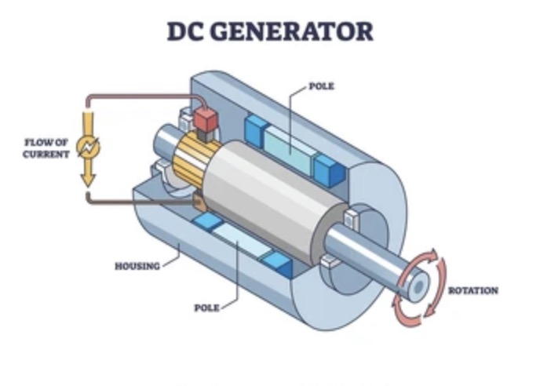
On my last prototype I used a metal rod as the calf attachment, but it had fitment issues on the motor shaft and it was loose, so I designed a new rod in Fusion 360 with an extrusion sized exactly to the motor shaft. I 3D printed it, slid it on, and it gripped the shaft tightly without any extra hardware.
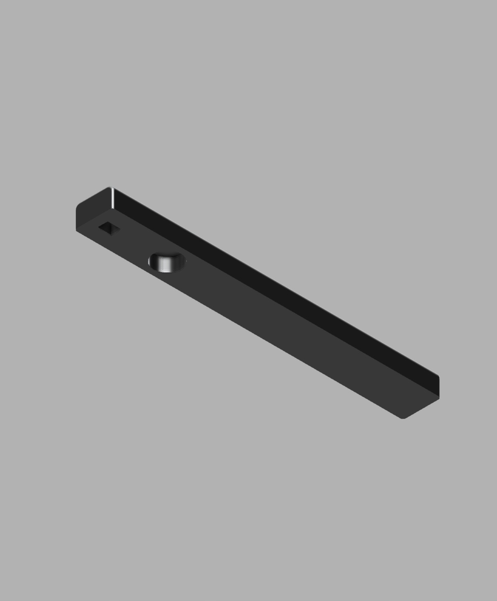
Installed a BR86D bridge rectifier so voltage output stays positive no matter which way the motor spins, this was the actual fix for the polarity issue from Week 5. I wired the two AC inputs (~) on the bridge to the two motor terminals, and the + and - outputs go to the rest of my circuit. Inside the rectifier there are 4 diodes set up so that whichever direction the current is coming in, it gets routed out the same way. So when I spin the rod back and forth, instead of the voltage flipping signs on every swing, it just stays positive and I can finally read a clean number on the analog pin.
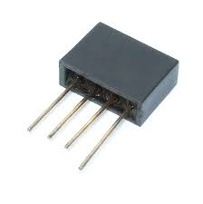
After the rectifier output was clean DC, I added a 100µF electrolytic capacitor across the + and - rails to smooth the voltage further (the rectifier output has a ripple, and the cap averages it out into a flatter line). Then I needed to read that voltage on the microcontroller, but the motor can spit out more than 3.3V at speed, which would damage the analog pin. So I built a voltage divider out of 2 resistors that drops the voltage by half before it hits the analog pin, and in the code I multiply the reading back by 2 to recover the real number.
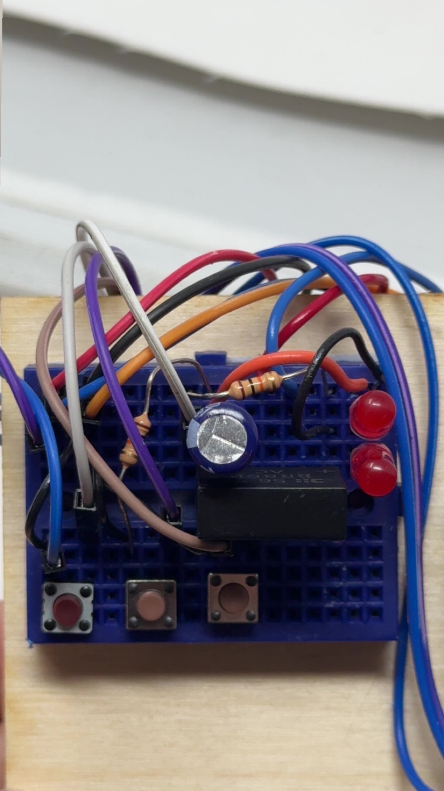
I needed a way to count steps, so I mounted a DRV5055A Hall effect sensor on the chassis near the "knee joint" and glued a small magnet onto the rotating rod. Every time the rod spins past the sensor the magnet's field triggers the sensor, which outputs a low pulse. Each full rotation of the rod represents one step of the leg bending, but my magnet actually triggers the sensor twice per rotation (once on the way past, once on the way back), so the code only counts a step after 2 pulses.
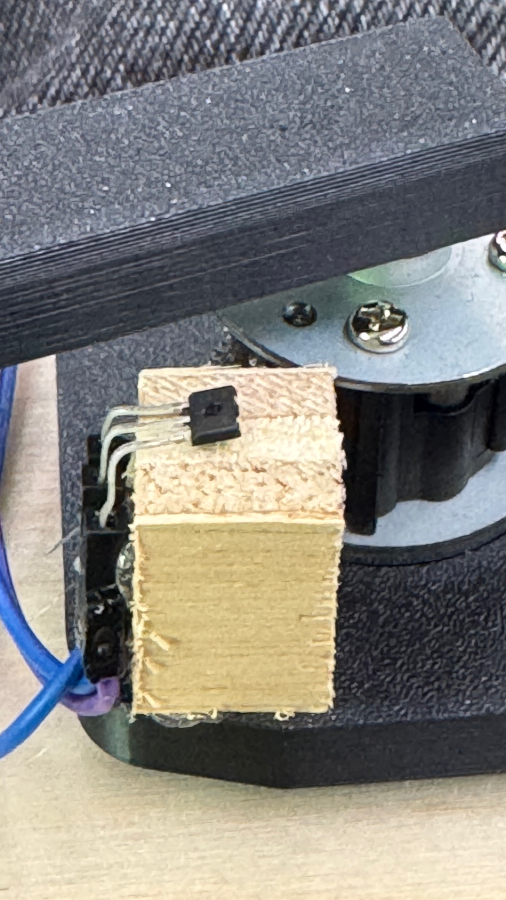
After I had it working I didn't love the look of the first rod, the magnet was sticking out forward because I'd just hot glued it on top, and the rod itself felt bulky. So I redesigned the rod in Fusion with a small pocket cut into the side, exactly the size of the magnet, so the magnet drops in flush instead of sitting proud. The new version is also thinner overall.
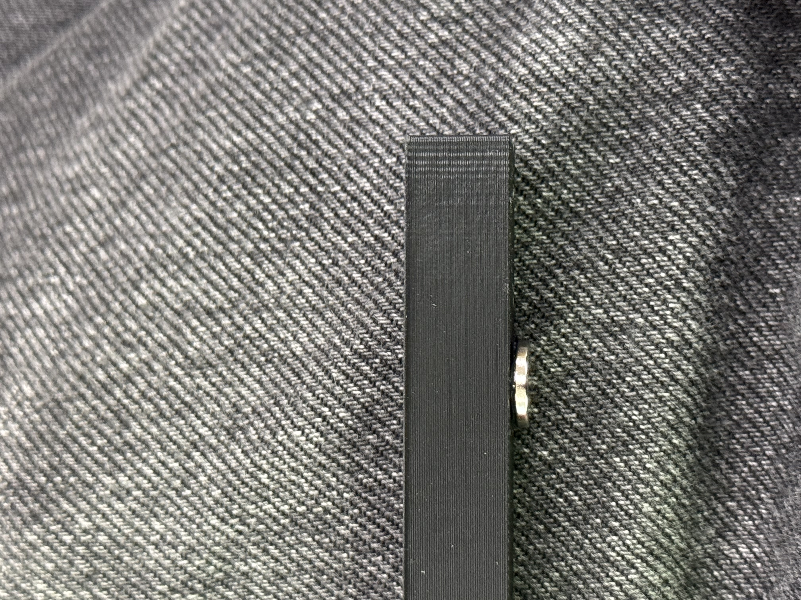
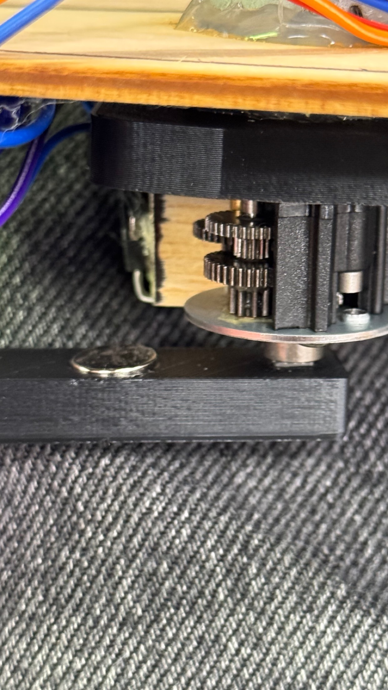
For the calories number I looked up the average calories burned per step for a person walking at normal pace, and it came out to roughly 0.05 calories per step. So in the code I multiply the step count by 0.05 every time a step is detected, and that's the calorie estimate I show on the OLED. It's not personalized (a heavier person burns more per step, a faster pace burns more per step too), but it's a reasonable average for the demo.
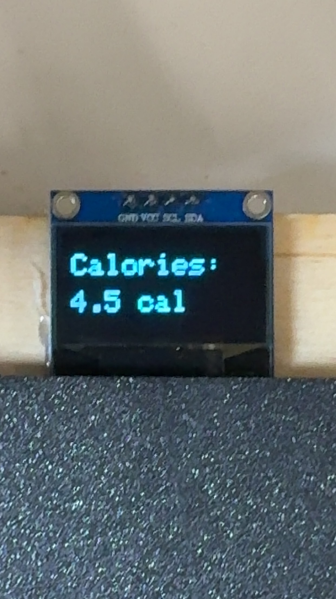
if (pulseCount == 2) {
stepCount++;
caloriesBurned = stepCount * 0.05;
pulseCount = 0;
}
With 3 things to display on the screen (steps, calories, voltage) I needed a way to switch between them, so I wired 3 momentary push buttons to pins D2, D3, and D6, one for each mode. Each button is configured with INPUT_PULLUP so it reads HIGH when not pressed and LOW when pressed, which avoids needing extra pull up resistors. I also added a 150ms debounce in the code, because mechanical buttons bounce when pressed and without debouncing a single press can register as 3 or 4 mode switches.
The display is a small SSD1306 OLED running over I2C, which means the whole screen connects with just 2 data wires (SDA and SCL) plus power and ground. The code clears the screen every loop and prints the current value, which is the simplest possible approach but it works.
With everything wired and coded up, I sat down and tested all 3 modes by hand. Spinning the rod back and forth, the Hall sensor counted steps accurately, the calories number updated in real time, and the voltage mode showed a range from about 0.69V at the lowest spin to 4.03V at the fastest. That 4V is after the voltage divider, so the real number on the motor side is 8V at peak, which is a lot for the analog pin to handle directly. For the final project I'm going to consider either using a 12V capable microcontroller or building a smarter clamp circuit.
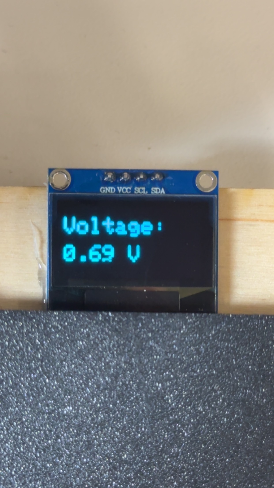
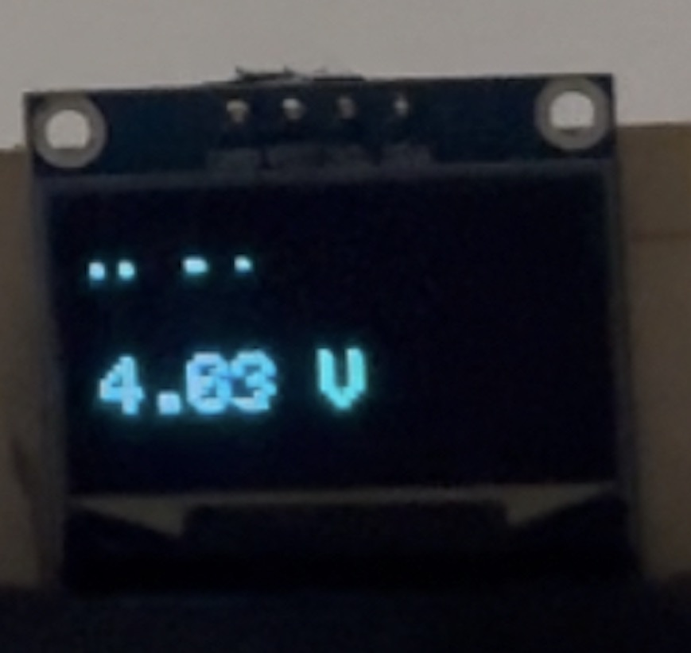
Main features
- Counts steps using a Hall sensor and a magnet
- Estimates calories burned (based on steps)
- Displays generated voltage from the motor
- OLED screen with 3 display modes
Hardware used
- OLED display (SSD1306, I2C)
- DRV5055A Hall effect sensor
- DC motor (used as generator)
- BR86D bridge rectifier
- 3 push buttons (momentary)
- XIAO ESP32C3 microcontroller
- Resistors, wires, and a small breadboard
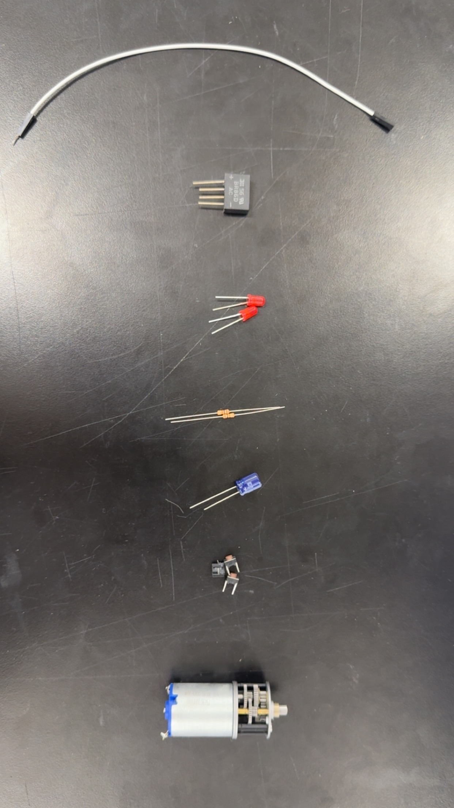
Code summary
The full sketch is below. The short version, it reads the Hall sensor in a loop, counts a step every 2 pulses, multiplies by 0.05 to get calories, reads the motor voltage on A0 and scales it back up by 2x, listens to 3 buttons for the mode switch, and updates the OLED with whichever value matches the current mode. A 150ms debounce on the buttons keeps a single press from registering as multiple presses.
#include <Adafruit_GFX.h>
#include <Adafruit_SSD1306.h>
#define SCREEN_WIDTH 128
#define SCREEN_HEIGHT 64
#define OLED_RESET -1
Adafruit_SSD1306 display(SCREEN_WIDTH, SCREEN_HEIGHT, &Wire, OLED_RESET);
const int hallPin = A1;
const int motorVoltagePin = A0;
const int buttonStepPin = D2;
const int buttonCalPin = D3;
const int buttonPowerPin = D6;
const int rawThreshold = 2500;
int pulseCount = 0;
int stepCount = 0;
float caloriesBurned = 0;
bool magnetDetected = false;
int mode = 0;
unsigned long lastButtonTime = 0;
const unsigned long debounceDelay = 150;
void setup() {
Serial.begin(9600);
pinMode(buttonStepPin, INPUT_PULLUP);
pinMode(buttonCalPin, INPUT_PULLUP);
pinMode(buttonPowerPin, INPUT_PULLUP);
if (!display.begin(SSD1306_SWITCHCAPVCC, 0x3C)) {
Serial.println(F("OLED failed"));
while (true);
}
display.clearDisplay();
display.display();
}
void loop() {
int rawValue = analogRead(hallPin);
if (!magnetDetected && rawValue < rawThreshold) {
magnetDetected = true;
pulseCount++;
if (pulseCount == 2) {
stepCount++;
caloriesBurned = stepCount * 0.05;
pulseCount = 0;
}
}
if (magnetDetected && rawValue > rawThreshold + 100) {
magnetDetected = false;
}
unsigned long now = millis();
if (now - lastButtonTime > debounceDelay) {
if (digitalRead(buttonStepPin) == LOW) {
mode = 0;
lastButtonTime = now;
} else if (digitalRead(buttonCalPin) == LOW) {
mode = 1;
lastButtonTime = now;
} else if (digitalRead(buttonPowerPin) == LOW) {
mode = 2;
lastButtonTime = now;
}
}
display.clearDisplay();
if (mode == 0) {
display.setCursor(0, 35);
display.print(stepCount);
} else if (mode == 1) {
display.setCursor(0, 35);
display.print(caloriesBurned, 1);
} else if (mode == 2) {
int raw = analogRead(motorVoltagePin);
float volts = raw * (3.3 / 4095.0) * 2.0;
display.setCursor(0, 35);
display.print(volts, 2);
}
display.display();
}
How it works (in short)
- Steps: Every 2 low signals from the Hall sensor counts as 1 step (the magnet passes twice per shaft rotation).
- Calories: Estimated as 0.05 calories per step.
- Voltage: Read on A0 through a 1:2 voltage divider, then doubled in the code to recover the real number.
Tips and notes for anyone doing this
- Use a full-bridge rectifier (like the BR86D) so the motor produces positive voltage in both spin directions.
- A capacitor across the rectifier output smooths the ripple a lot, even a small one (100µF) makes a big difference.
- Use INPUT_PULLUP mode on the button pins instead of external pull up resistors, it's one less component on the board.
Oscilloscope findings
As part of the assignment I put a scope on the OLED screen's I2C lines (GND and SCL) to see the clock signal. The screen runs at a steady frequency and the wave shape is what you'd expect for I2C, a quick rising edge and a sharper falling edge, repeated as the display updates.
First view, 2.00 µs per division, 5x zoom. The frequency reads 2.033 kHz, which is the rate the display is being clocked at.
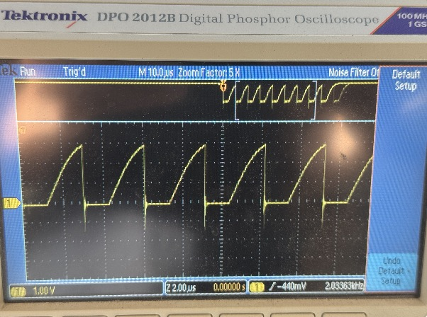
Zoomed out to 40.0 µs per division at 4x zoom. The frequency still reads 2.026 kHz, basically the same as the close up view, confirming the clock is stable.
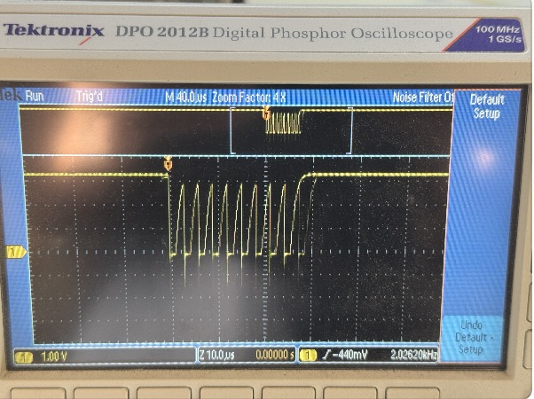
Using the scope's cursor tools I measured the time between two peaks at 3.04 µs and the voltage peak to peak at 4V. Frequency works out to about 1.99 kHz, which matches the earlier readings.
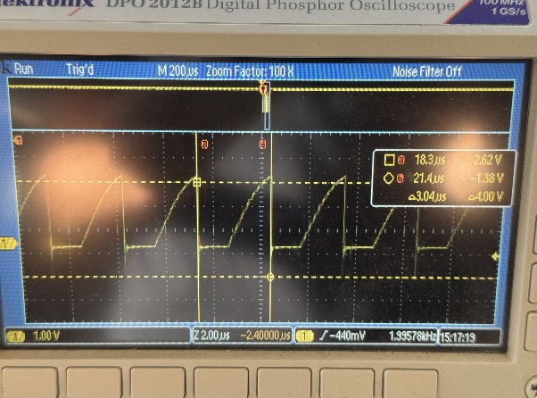
The very start of the waveform, the line drops sharply on the first edge, which caught my eye because the end of the waveform settles smoothly instead. I circled it on the screenshot.
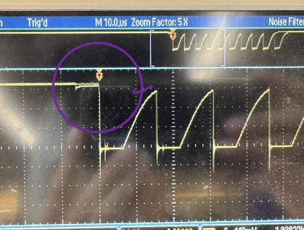
And the end of the waveform for comparison. The smooth tail is what made the sharp leading edge stand out.
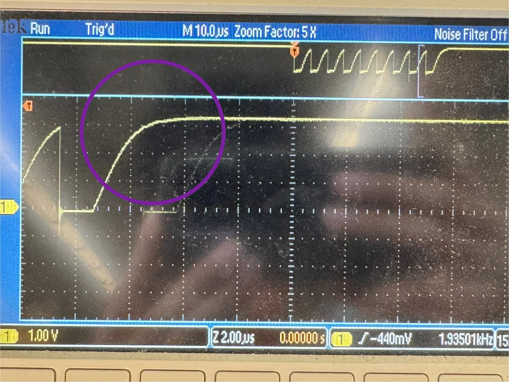
One thing I noticed but couldn't get a clean photo of was a small wobble at the bottom of the wave when zoomed in tight. It looked like a tiny secondary oscillation riding on the main signal.
Conclusion
This week was a real step toward the final project. I built a working prototype that not only generates electricity from leg movement but also tracks steps, estimates calories, and shows live voltage on a screen. Along the way I solved the polarity problem with a bridge rectifier, smoothed the output with a cap, scaled the voltage safely to the analog pin, and learned a lot about debouncing and basic UI on a microcontroller. I feel a lot more confident about the full scale version now, and most of the circuit decisions from this build carry directly into the final.